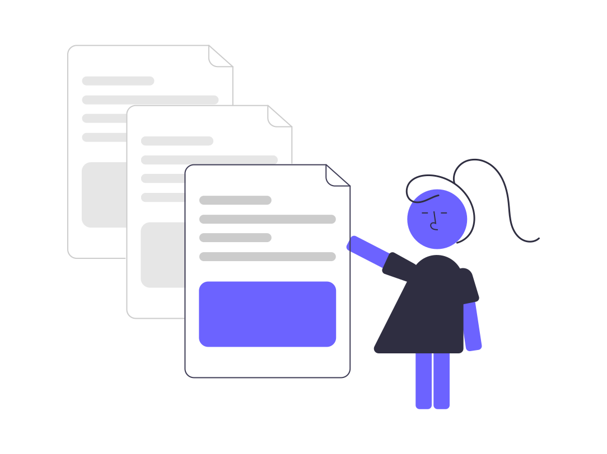
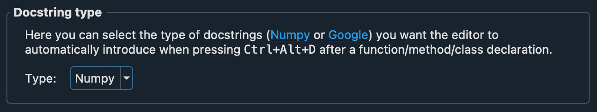

All in One View
Content from Introduction
Last updated on 2026-06-22 | Edit this page
Estimated time: 10 minutes
Overview
Questions
- What is software documentation?
- Why do we care about it?
- What are the challenges?
Objectives
- Become familiar with the benefits and challenges of software documentation.
Software Documentation Overview
Software documentation, per Forward, is any artifact made as part of the software development process that is intended to communicate information about the software system about which it was written.

Most people are familiar with this concept and know good documentation when they see it. More difficult, however, is how to write good documentation.
In this lesson, students will learn about the different types of software documentation, plus the practices and tools that enable better documentation.
The Benefits of Good Documentation
No one would argue that documentation isn’t useful. The payoffs:
| Benefit | Why it matters |
|---|---|
| Better maintainability | Clarifies what each part of the code does, making it safer and easier to change. |
| Improved team productivity | Gets everyone on the same page and brings new members up to speed faster. |
| Increased code quality | Writing down what code should do surfaces inconsistencies and prompts refactoring. |
The Challenges to Making Good Documentation
…but documentation isn’t easy. The common obstacles:
| Challenge | What it looks like |
|---|---|
| Time | It competes with feature work, and falls out of date as interfaces change (technical debt). |
| Skill | Writing clearly is genuinely hard and takes practice — it’s easy to get discouraged. |
| Process | Without a habit or workflow, documenting feels “clunky” and like wasted effort. |
Where does genAI fit?
Generative AI (LLMs like ChatGPT and Claude) is changing this practice. It can draft a docstring, a README, or a tutorial in seconds — which knocks down the time and skill barriers above. But cheap first drafts shift the real work from writing to reviewing: the human still has to verify that what the AI wrote is correct. We’ll return to this thread throughout the lesson.
What do you think of this documentation?
Navigate to https://spack.readthedocs.io/en/latest/ and spend a minute browsing the documentation.
- What makes this good documentation?
- Where is there room for improvement?
- Software documentation provides both users and developers information about what a software is supposed to do.
- Software documentation has numerous benefits including improved team productivity, increased code quality, and better maintainability.
- Software documentation can be challenging due to cost and time to maintain.
Content from Types of Software Documentation
Last updated on 2026-06-22 | Edit this page
Estimated time: 12 minutes
Overview
Questions
- What are the different types of software documentation?
- How do the types differ?
- How can the Diátaxis framework help organize documentation?
Objectives
- Become familiar with the two main categories of software documentation and how they differ.
- Recognize the four modes of the Diátaxis framework.
The Types of Software Documentation
In our discussion of documentation, we will focus on two overarching categories: Developer and User.
But wait… aren’t there more?
You may be sitting there and asking this question. Many different sources will list various alternative types of documentation such as requirements documentation and testing documentation.
These specific sub-types of documentation can be categorized into the two types listed here. We provide some examples below:
| Category | Examples |
|---|---|
| Developer | Requirements documentation; testing documentation; API documentation |
| User | How-to guides; tutorials; troubleshooting guidelines |
Can you think of more?
What other types of documentation can you think of? Do they fit into the categories above?
Characteristics of Each Type
| Category | Intent | Target Audience |
|---|---|---|
| Developer | Inform developers how to interface with a software package across the whole development lifecycle, including team processes. | Developers, technical stakeholders, team members |
| User | Help users succeed with a package from installation through everyday use, including examples and troubleshooting. | End-users, stakeholders |
A Modern Take: The Diátaxis Framework
The developer/user split tells you who you’re writing for. Diátaxis is a popular complementary framework that asks what kind of help the reader needs right now. It identifies four modes:
| Mode | Serves | Answers… | Example |
|---|---|---|---|
| Tutorial | Learning | “Teach me, step by step.” | A guided first project |
| How-to guide | A task | “How do I accomplish X?” | “How to connect to the database” |
| Reference | Looking up | “What exactly does this do?” | API docs, config options |
| Explanation | Understanding | “Why does it work this way?” | A design-decisions write-up |
The key insight: these modes have different goals and shouldn’t be mixed. A tutorial clogged with reference detail stops teaching; reference docs padded with explanation get hard to scan. Diátaxis maps neatly onto the categories above — tutorials and how-to guides lean user, reference and explanation often serve both.
- There are two primary categories for documentation: developer and user.
- Developer documentation describes how developers should interface with a software package.
- User documentation helps users be more successful in using a software package.
- The Diátaxis framework reframes the categories — tutorials, how-to guides, reference, and explanation — and warns against mixing these modes.
Content from Documentation Better Practices
Last updated on 2026-06-22 | Edit this page
Estimated time: 30 minutes
Overview
Questions
- How does bias affect documentation?
- What are better practices for software documentation?
Objectives
- Learn about some of the unconscious biases that are apparent when writing documentation.
- Become familiar with practices that have been empirically shown to improve software documentation, both in process and end product.
Let’s make a sandwich
We are going to make a nut butter and jelly sandwich.
- Write instructions for making this sandwich.
- Trade instructions with another participant and read each others’.
- How clear are the instructions? What are the strengths and weaknesses?
Bias in Documentation
You have now told your partner how to make a sandwich. Have you ever done that before? Maybe you told them the steps:
- Get two slices of bread
- Spread condiments on the bread
- Put the slices together
These steps may seem clear to you, but you have the benefit of context. You know what a sandwich is. You’ve eaten one before. You may have even made one before. As a result, you are able to fill in the logical gaps that someone who has never seen or eaten a sandwich might not know.
You have the benefit of context — and your reader may not. Be thoughtful about three things in particular:
| Watch out for… | Because… | Better Practice |
|---|---|---|
| Culture | Slang and colloquialisms (“spaghetti code”) don’t translate. | Use clear, concise language; assume a different background. |
| Context | The same word (“workflow”) means different things across domains. | Define domain-specific terms; don’t assume shared jargon. |
| Experience | Readers range from novice to expert. | Match the expected experience level — and state that level in the docs. |
Documentation Better Practices
There is no one-size-fits-all process. Use these as a guide for practices that tend to help:
| Practice | Why |
|---|---|
| Version control your docs | Track changes, revert, and review them just like source code — especially if docs live outside the code repo. |
| Good enough beats perfect | Don’t get stuck polishing forever; ship useful docs and improve them later. |
| Less is more | Every doc is technical debt. Keep only what you need; flag the rest for removal. |
| Know your audience | Their knowledge level tells you what to explain and what to assume. |
| Document as you go | Writing it now, while it’s fresh, beats reconstructing it a month later. |
| User-test your docs | Have a new person follow them; every question or snag marks a gap to fix. |
GenAI and the “benefit of context”
An LLM has the opposite problem from you: it has no real knowledge of your project, domain, or users — but it will confidently fill the gaps anyway (this is hallucination). That makes genAI excellent for a first draft and for spotting what you forgot to explain, but the human must supply the true context and verify every claim. Think of it as a fast, eager collaborator who has never actually used your software. A good rule: generate with AI, but you own the review.
Let’s make a sandwich… again
Try this exercise again. We want to make a nut butter and jelly sandwich.
- Write instructions to make this sandwich.
- Partner with the same participant as before.
- Discuss: What changes did you make?
- It is important to be aware of potential unconscious biases when writing documentation. Make sure to consider culture, context, and experience.
- No single practice will fit all software projects, but there are some generally better practices: version control, less is more, know your audience, document as you go.
- GenAI can draft and gap-check documentation, but it lacks real project context — you supply the context and verify the output.
Content from Documentation in Practice
Last updated on 2026-06-22 | Edit this page
Estimated time: 22 minutes
Overview
Questions
- What does developer documentation look like in practice?
- What does user documentation look like in practice?
- What belongs in a README, a docstring, and a citation file?
Objectives
- Become familiar with real-life examples of documentation.
- Practice writing different kinds of documentation.
- Understand the role of the README, docstrings, and citation/licensing files.
Start the Right Way: the README
Before any framework or tool, almost every project’s documentation begins with a single file: the README. It’s the first thing a visitor sees on GitHub, and for many research projects it’s the only documentation that exists. A good README answers a newcomer’s questions fast:
| Section | Answers |
|---|---|
| What and why | What does this do, and why would I use it? |
| Install | How do I get it running? |
| Usage / quick example | Show me the simplest thing that works. |
| License | Can I use it, and how? |
| How to cite | How do I give credit in a paper? |
| Contributing / contact | How do I report a bug or get help? |
You don’t need all of these on day one — but a README that covers what/why and a quick example already puts you ahead of most research code.
Document the Why, Not the What: Docstrings and Comments
Two kinds of in-code documentation do most of the day-to-day work:
- Docstrings describe what a function/class does and how to use it — its inputs, outputs, and behavior. They’re written for the person calling your code (and power tools like Sphinx, covered next episode).
- Inline comments explain why a particular piece of code is the way it is — the non-obvious decision, the workaround, the edge case.
The better practice: comment the why, not the
what. Code already says what it does; a
comment like # add 1 to i is noise. A comment explaining
why you add 1 (an off-by-one in an upstream API, say) is
gold.
Developer Documentation Examples
| Documentation Type | Explanation | Example |
|---|---|---|
| Team processes | This type of documentation documents the expected development processes within a team. These generally include an objective, stakeholders, and steps to follow. | US-RSE’23
Website Repository CONTRIBUTING guide |
| Styles and standards | This type of documentation states the expectations on styles and standards within a code. This can include preferred tools, usage of existing style guides, and project or domain-specific standards. | Pyomo’s Required Coding Standards |
| API | This type of documentation is both developer and user documentation. From a developer perspective, this documentation elaborates the intent of the code, e.g., what the code is supposed to be doing, which can improve maintainability. | Spack’s API Documentation |
PRACTICE: Euler’s Method Documentation
Have you heard of Euler’s Method? It’s a way to calculate a numerical
approximation for the value of a function, based on a starting value
x_0, a particular step size h, and the
derivative of the function.
Write some documentation for the following code snippet:
PYTHON
class EulersMethod:
def deriv(self, x, y):
return y**2 + y*x + x**3
def approx(self, y, x, h):
y_j = y + h*self.deriv(x, y)
x_j = x + h
return y_j, x_jBonus: How would you improve this code to make it more clear?
GenAI Bonus: Ask an LLM to write a docstring for
this class. Then critique its output: Did it correctly describe
what deriv and approx actually do? Did it
invent behavior the code doesn’t have? Did it explain the why?
Fix what it got wrong. This is the review skill that matters most when
documenting with AI.
User Documentation Examples
| Documentation Type | Explanation | Example |
|---|---|---|
| Installation | This documentation is meant to help users get a package installed and working properly. Frequently, it will detail not only the different methods of installing the software, but also simple explanations of how to ensure it was installed correctly (e.g., a sanity test). | NumPy Installation Instructions |
| Debugging and troubleshooting | This type of documentation helps users troubleshoot common errors. This is normally built from previous questions or common mistakes, such as invalid setup, options, or inputs. | Pyomo Common Warnings and Errors |
| Tutorials and examples | This type of documentation is meant to show users, step-by-step, on either small or real-world scales, how a software package is supposed to be used. This documentation helps with clarifying the developers’ intended use and acts as a starting point for users. | Pandas Getting Started Tutorials |
PRACTICE: Install Python
Assume that you have a new team member who does not have Python on their machine and wants to install it. They send you an email to ask how they should do it.
- Do you have all the information you need to answer this question? Why or why not?
- Given only the email, write instructions detailing how to install Python from python.org.
REMINDER: Culture, Context, Experience
Keep in mind culture, context, and experience when writing your instructions.
Make It Citable: CITATION and LICENSE
Two small files matter a lot for research software:
-
LICENSEtells others what they’re legally allowed to do with your code. Without one, the default is “all rights reserved” — others can’t reuse it, even if your repo is public. -
CITATION.cffis a simple, structured (Citation File Format) file telling people how to cite your software. GitHub reads it and shows a “Cite this repository” button automatically — so your work gets credited correctly in papers.
These pair naturally with the contributing guides and pull-request workflow from the previous session. (INTERSECT’s own lesson repos include both.)
- There are numerous examples of different types of documentation in practice, each with its own intended purpose.
- A project must pick the documentation that makes the most sense for its use case and domain.
- The README is the front door; docstrings document the why; LICENSE and CITATION.cff make research software reusable and citable.
- GenAI can draft documentation quickly, but you must review it for accuracy.
Content from Documentation Tools
Last updated on 2026-06-22 | Edit this page
Estimated time: 18 minutes
Overview
Questions
- What tools enable better documentation?
- What tools can streamline the documentation process?
Objectives
- Become familiar with categories of tools to streamline documentation processes.
- Practice using a small subset of documentation tools.
Documentation Tools
There are plenty of tools to make documentation easier. In this episode, we will cover just a few, but keep in mind, this is by no means an exhaustive list.
Style Guides and Standards
A good first step to streamline the documentation process is to create or apply an existing style guide. This is useful both for developer and user documentation.
For users, common standards and styles makes the documentation predictable, consistent, and easier to read and use. For developers, common standards and styles allow developers to focus more on logic than styling and makes fewer ambiguities and increases the chance that they will identify errors.
There is no single standard across all languages and projects. Some language style guides have specific recommendations for in-line documentation like code comments and API documentation (e.g., Doxygen, Google, NumPy).
PRACTICE: Google Style for Euler’s Method
Google has many style guides, including a Python guide for writing docstrings.
Using the Google style guide, write a docstring for the following class and its methods:
IDEs
Modern integrated development environments (IDEs) combine text editing with tools like building, testing, and — usefully here — docstring generation. Popular options include VSCode, PyCharm, NetBeans, and Eclipse; most support many languages via extensions.
Many incorporate documentation generators that follow standard style guides. For example, the Spyder IDE will present the framework for a docstring in your chosen style:

GenAI-powered assistants
The newest tools in this category are AI coding assistants (GitHub Copilot, Cursor, and the docstring features now built into many IDEs). They can draft a docstring or comment from your code in one keystroke. Two caveats carry over from earlier:
- Verify it. The assistant infers intent from code — it can describe behavior the code doesn’t actually have. You own the review.
- Mind the data. For research code, check your group’s and tool’s policy before sending unpublished or sensitive code to a third-party service.
Automated Generation
Another set of tools that streamline the documentation process are those that automatically generate the documentation within your software package. The two most popular documentation generators are:
Both of these tools will generate documentation, per configuration preferences, and automatically integrate information like API documentation.
PRACTICE: Trying out Sphinx
We will quickly practice getting Sphinx set up on a project.
NOTE: These steps assume you are working from the command line and have a clone of your practice repository.
- (OPTIONAL, but recommended) Make a virtual Python environment
BASH
# MacOS/Linux
python -m venv virtual-python
source virtual-python/bin/activate
# Windows
python -m venv virtual-python
virtual-python\Scripts\activate- Install sphinx:
pip install sphinx - Move to your practice directory:
cd /path/to/your/practice/repository - Make and move to a document directory:
mkdir docs && cd docs - Run Sphinx’s quickstart:
sphinx-quickstart(NOTE: Use default options as applicable; fill out everything else as you desire.) - Generate the documentation:
make html - View your documentation:
open _build/html/index.html
Automated Publishing
The biggest time-saver is automated publishing: when a change is merged, your documentation rebuilds and goes live with no manual steps. Two free services dominate for open-source projects:
| Service | Best for | How it works |
|---|---|---|
| Read the Docs | Sphinx/MkDocs projects | Connect your repo once; it rebuilds on every push. |
| GitHub Pages | Any static site | A GitHub Actions workflow builds and deploys your docs. |
The modern approach for both is the same in spirit:
you commit your docs source, and a hosted service rebuilds them
automatically. You no longer need to hand-manage a gh-pages
branch or commit built HTML — the recommended path is to let the service
(or a GitHub Actions workflow) do the building.
Easiest for Sphinx: Read the Docs
For a Sphinx project, the fastest route to published docs is Read the Docs:
- Push your
docs/directory (from the Sphinx exercise above) to GitHub. - Sign in to readthedocs.org with your GitHub account.
- Click Import a Project, pick your repo, and Build.
That’s it — Read the Docs rebuilds on every push. No branch juggling,
no .nojekyll, no hand-edited Makefile.
GitHub Pages for a Personal Website
The exact GitHub Pages machinery that publishes project docs can also publish a personal website — a place for your CV, publications, software, and a bit about you. For a researcher or RSE, this is one of the highest-return things you can set up, and it costs nothing to host.
The trick is GitHub’s special user site repository.
If you name a repo YOURUSERNAME.github.io, GitHub
automatically publishes it at
https://YOURUSERNAME.github.io. You don’t have to write a
site from scratch — there are excellent academic/personal templates you
can fork and fill in:
| Template | Good for |
|---|---|
| academicpages | Academic CV, publications, talks (very popular for researchers) |
| al-folio | Clean academic portfolio with publications |
| Jekyll Now | A simple blog/personal page, minimal setup |
| GitHub Pages themes | Built-in one-click themes for a quick start |
PRACTICE (Optional / Take-home): Build your site
You almost certainly won’t finish this in the session — and that’s fine. The goal is to know this is something you can do, and to have the starting point. Pick whichever appeals:
Option A — A personal website (recommended for the long term):
- Find a template above that you like and fork it (or use GitHub’s “Use this template”).
- Rename the repository to
YOURUSERNAME.github.io. - Edit the config/Markdown files to add your name, bio, and a project or two.
- Visit
https://YOURUSERNAME.github.ioto see it live.
Option B — Publish the project docs you just made:
- Read the Docs: follow the three steps in the callout above to publish your Sphinx docs.
- GitHub Pages via Actions: in your repo, enable Pages (Settings > Pages > “Build and deployment” > GitHub Actions) and add the starter workflow GitHub suggests.
That’s it! You now know some useful tips and tricks for making better documentation.
- Documentation tools vary from style guides to IDEs to generators (Sphinx, Doxygen) to automated publishing.
- Many tools have quick-start capabilities to get small or new projects started with better documentation processes.
- Modern hosting (Read the Docs, GitHub Pages via Actions) rebuilds and publishes docs automatically — no manual branch management needed.
- The same GitHub Pages tech can host a free personal website
(
YOURUSERNAME.github.io) from a template. - AI assistants can generate docstrings quickly, but always verify the output and mind data-sharing policies.